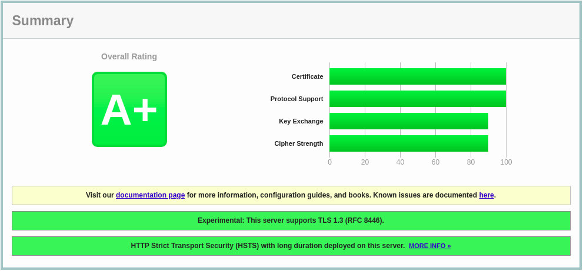

在Debian 10 Linux 上使用 Let's Encrypt SSL 保护 Nginx
本教程显示了如何在运行 Nginx 作为 Web 服务器的 Debian 10 Buster 上安装免费的 Let's Encrypt SSL 证书。我们还将展示如何配置 Nginx 以使用 SSL 证书并启用 HTTP/2 。
Let's Encrypt SSL 是由 Internet 安全研究组 (ISRG) 开发的免费，自动化和开放的证书颁发机构，它提供免费的 SSL 证书。
Let's Encrypt 颁发的证书受到所有主要浏览器的信任，并且自颁发之日起有效期为 90 天。
先决条件
在继续执行指南之前，请确保满足以下先决条件：
- 以 root 或具有 sudo 特权的用户身份登录。
- 您要获取 SSL 证书的域必须指向您的公共服务器 IP 。我们将使用
example.com。 - 已安装 Nginx。
安装 Certbot
我们将使用 certbot 工具获取并更新证书。
Certbot 是功能齐全且易于使用的工具，可自动执行用于获取和续订 Let's Encrypt SSL 证书以及配置 Web 服务器以使用证书的任务。
certbot 软件包包含在默认的 Debian 存储库中。运行以下命令以安装 certbot ：
sudo apt update
sudo apt install certbot
产生 Dh(Diffie-Hellman) 组
Diffie-Hellman 密钥交换 (DH) 是一种在不安全的通信通道上安全地交换加密密钥的方法。
我们将生成一组新的 2048 位 DH 参数以增强安全性：
sudo openssl dhparam -out /etc/ssl/certs/dhparam.pem 2048
您也可以将大小更改为最多 4096 位，但是生成时间可能会超过 30 分钟，具体取决于系统的配置。
获取 Let's Encrypt SSL 证书
为了获得该域的 SSL 证书，我们将使用 Webroot 插件。它通过创建用于验证 $ { webroot-path } /.well-known/acme-challenge 目录中请求的域的临时文件来工作。 Let's Encrypt 服务器对临时文件发出 HTTP 请求，以验证请求的域是否解析为 certbot 运行的服务器。
我们将所有到 .well-known/acme-challenge 的 HTTP 请求映射到一个目录 /var/lib/letsencrypt 。
运行以下命令以创建目录并使该目录对 Nginx 服务器可写：
mkdir -p /var/lib/letsencrypt/.well-known
chgrp www-data /var/lib/letsencrypt
chmod g+s /var/lib/letsencrypt
为了避免重复代码，我们将创建两个片段，这些片段将包含在所有 Nginx 服务器块文件中。
打开文本编辑器并创建第一个片段 letsencrypt.conf ：
sudo nano /etc/nginx/snippets/letsencrypt.conf
文件 /etc/nginx/snippets/letsencrypt.conf
location ^~ /.well-known/acme-challenge/ {
allow all;
root /var/lib/letsencrypt/;
default_type "text/plain";
try_files $uri =404;
}
第二个片段 ssl.conf 包括 Mozilla 推荐的配置程序，启用 OCSP 装订， HTTP 严格传输安全性 (HSTS) 并强制执行少量以安全性为重点的 HTTP 标头。
sudo nano /etc/nginx/snippets/ssl.conf
文件 /etc/nginx/snippets/ssl.conf
ssl_dhparam /etc/ssl/certs/dhparam.pem;
ssl_session_timeout 1d;
ssl_session_cache shared:SSL:50m;
ssl_session_tickets off;
ssl_protocols TLSv1.2 TLSv1.3;
ssl_ciphers ECDHE-ECDSA-AES128-GCM-SHA256:ECDHE-RSA-AES128-GCM-SHA256:ECDHE-ECDSA-AES256-GCM-SHA384:ECDHE-RSA-AES256-GCM-SHA384:ECDHE-ECDSA-CHACHA20-POLY1305:ECDHE-RSA-CHACHA20-POLY1305:DHE-RSA-AES128-GCM-SHA256:DHE-RSA-AES256-GCM-SHA384;
ssl_prefer_server_ciphers off;
ssl_stapling on;
ssl_stapling_verify on;
resolver 8.8.8.8 8.8.4.4 valid=300s;
resolver_timeout 30s;
add_header Strict-Transport-Security "max-age=63072000" always;
add_header X-Frame-Options SAMEORIGIN;
add_header X-Content-Type-Options nosniff;
完成后，打开域服务器块文件，并包含 letsencrypt.conf, 如下所示：
sudo nano /etc/nginx/sites-available/example.com
文件 /etc/nginx/sites-available/example.com
server {
listen 80;
server_name example.com www.example.com;
include snippets/letsencrypt.conf;
}
创建指向 sites-enabled 目录的符号链接以启用域服务器块：
sudo ln -s /etc/nginx/sites-available/example.com /etc/nginx/sites-enabled/
重新启动 Nginx 服务以使更改生效：
sudo systemctl restart nginx
现在，您可以通过运行以下命令来获取 SSL 证书文件：
sudo certbot certonly --agree-tos --email admin@example.com --webroot -w /var/lib/letsencrypt/ -d example.com -d www.example.com
如果成功获得 SSL 证书，则会在您的终端上打印以下消息：
IMPORTANT NOTES:
IMPORTANT NOTES:
- Congratulations! Your certificate and chain have been saved at:
/etc/letsencrypt/live/example.com/fullchain.pem
Your key file has been saved at:
/etc/letsencrypt/live/example.com/privkey.pem
Your cert will expire on 2020-02-22\. To obtain a new or tweaked
version of this certificate in the future, simply run certbot
again. To non-interactively renew *all* of your certificates, run
"certbot renew"
- If you like Certbot, please consider supporting our work by:
Donating to ISRG/Let's Encrypt: https://letsencrypt.org/donate
Donating to EFF: https://eff.org/donate-le
编辑域服务器块，并包括 SSL 证书文件，如下所示：
sudo nano /etc/nginx/sites-available/example.com
文件 /etc/nginx/sites-available/example.com
server {
listen 80;
server_name www.example.com example.com;
include snippets/letsencrypt.conf;
return 301 https://$host$request_uri;
}
server {
listen 443 ssl http2;
server_name www.example.com;
ssl_certificate /etc/letsencrypt/live/example.com/fullchain.pem;
ssl_certificate_key /etc/letsencrypt/live/example.com/privkey.pem;
ssl_trusted_certificate /etc/letsencrypt/live/example.com/chain.pem;
include snippets/ssl.conf;
include snippets/letsencrypt.conf;
return 301 https://example.com$request_uri;
}
server {
listen 443 ssl http2;
server_name example.com;
ssl_certificate /etc/letsencrypt/live/example.com/fullchain.pem;
ssl_certificate_key /etc/letsencrypt/live/example.com/privkey.pem;
ssl_trusted_certificate /etc/letsencrypt/live/example.com/chain.pem;
include snippets/ssl.conf;
include snippets/letsencrypt.conf;
# . . . other code
}
上面的配置告诉 Nginx 从 HTTP 重定向到 HTTPS ，从 www 重定向到非 www 版本。
重新启动或重新加载 Nginx 服务，以使更改生效：
sudo systemctl restart nginx
使用 https:// 打开您的网站，您会注意到一个绿色的锁图标。
如果您使用 SSL Labs 服务器测试来测试您的域，则会获得一个 A+ 成绩，如下图所示：

自动更新 Let's Encrypt SSL SSL 证书
Let's Encrypt SSL 的证书有效期为 90 天。要在证书过期之前自动续订证书， certbot 程序包会创建一个 cronjob ，该程序每天运行两次，并在证书到期前 30 天自动续订任何证书。
续订时，必须重新加载 nginx 服务，以便服务器加载证书。附加 --renew-hook " systemctl reload nginx " 到 /etc/cron.d/certbot 文件，如下所示：
sudo nano /etc/cron.d/certbot
文件 /etc/cron.d/certbot
0 */12 * * * root test -x /usr/bin/certbot -a \! -d /run/systemd/system && perl -e 'sleep int(rand(3600))' && certbot -q renew --renew-hook "systemctl reload nginx"
通过运行以下命令来测试自动续订过程：
sudo certbot renew --dry-run
如果没有错误，则表示更新过程成功。
结论
如今，必须拥有 SSL 证书。它可以保护您的网站，提高 SERP 排名，并允许您在 Web 服务器上启用 HTTP/2 。
在本教程中，我们向您展示了如何使用 certbot 脚本生成和更新 SSL 证书。我们还向您展示了如何配置 Nginx 以使用证书。
要了解有关 Certbot 的更多信息，请访问 Certbot 文档。